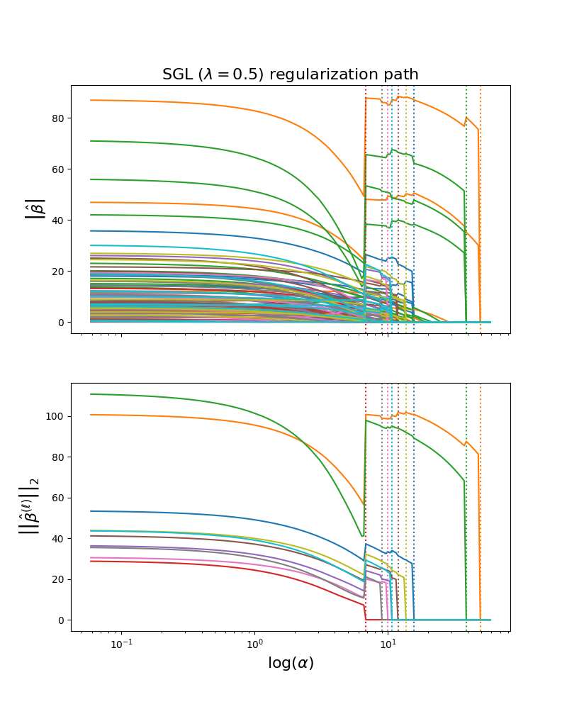

Note
Go to the end to download the full example code
Visualizing the SGL regularization path
Computes SGL path using the function sgl_path along the regularization parameter
on a synthetic dataset. Each color represents a different feature group in the
coefficient vector, and this is displayed as a function of the regularization
parameter.
When alpha is very large, the regularization effect dominates and the coefficients tend to zero. As alpha tends toward zero the solution tends towards the ordinary least squares.
When a group of covariates goes to zero (indicated by the dashed vertical line), this relieves the regularization penalty on the other groups, creating “jumps” in the magnitudes of the other covariate groups.
In practise it is necessary to tune alpha (and l1_ratio) to best fit the training data.
import groupyr as gpr
import matplotlib.pyplot as plt
import numpy as np
X, y, groups, coef = gpr.datasets.make_group_regression(
n_samples=400,
n_groups=10,
n_informative_groups=3,
n_features_per_group=10,
n_informative_per_group=3,
noise=200,
coef=True,
random_state=10,
shuffle=True,
)
path_coefs, path_alphas, path_iters = gpr.sgl_path(
X, y, l1_ratio=0.5, groups=groups, eps=0.001, n_alphas=200, max_ier=1000, tol=1e-3
)
group_means = np.array([np.linalg.norm(path_coefs[grp], axis=0) for grp in groups])
zero_idx = np.array(
[np.max(np.where(group_means[i] == 0)[0]) for i in range(len(groups))]
)
fig, ax = plt.subplots(2, 1, figsize=(8, 10), sharex=True)
cmap = plt.get_cmap("tab10")
for grp, color, z_idx in zip(groups, cmap.colors, zero_idx):
_ = ax[0].semilogx(
path_alphas, np.abs(path_coefs[grp][:-1].transpose()), color=color
)
_ = ax[0].axvline(path_alphas[z_idx], ls=":", color=color)
_ = ax[1].axvline(path_alphas[z_idx], ls=":", color=color)
_ = ax[1].semilogx(path_alphas, group_means.transpose())
_ = ax[1].set_xlabel(r"$\log(\alpha)$", fontsize=16)
_ = ax[0].set_ylabel(r"$\left| \hat{\beta} \right|$", fontsize=16)
_ = ax[1].set_ylabel(
r"$\left| \left| \hat{\beta}^{(\ell)} \right| \right|_2$", fontsize=16
)
_ = ax[0].set_title(r"SGL ($\lambda=0.5$) regularization path", fontsize=16)
Total running time of the script: ( 0 minutes 10.286 seconds)